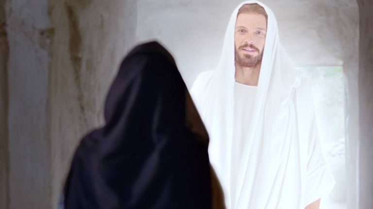
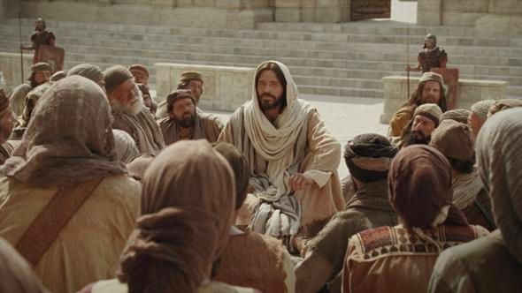

Church video
Jesus Is Resurrected
Watch the account of the empty tomb and Mary’s encounter with Jesus. Compare the portrayal with John 20.
The Church of Jesus Christ of Latter-day Saints
Art & Study

Christian hope rests not only on what Jesus Christ taught before His death, but on the witness that He rose from the tomb and lives.
The New Testament presents the Resurrection as the decisive victory over death. Latter-day Saint teaching joins that biblical witness with modern apostolic testimony that Jesus Christ is the living, immortal Son of God.
To call Jesus the Living Christ means discipleship is directed toward a present Lord, not merely admiration for a past teacher. Prayer, repentance, covenant, service, and hope are grounded in the belief that He continues His work and invites people to follow Him now.
Read John 20:1-18 before looking again at the artwork. The chapter begins with an empty tomb and people who do not yet understand what has happened. Mary weeps; then Jesus addresses her by name. Notice how the account moves from loss and uncertainty to recognition and a message she is asked to share.
Continue with John 20:19-31. Jesus appears among the disciples, speaks peace, and shows His hands and side. Thomas is absent at first and later receives his own encounter. The chapter does not give every witness the same experience. Its closing verses explain that the written signs have been selected so readers may believe in Jesus as the Christ, the Son of God, and have life through His name.
Thomas's story deserves more care than a label about doubt. Observe what he says, how Jesus responds, and where the account ends. Someone reading today has the written witness rather than Thomas's direct encounter. The passage invites faith; it does not authorize us to demand that another person arrive at conviction on our schedule.
This is devotional artwork, not a photograph or independent record of the Resurrection. Consider how the artist's choices direct your attention toward Christ. Then separate what you see in the image from what John actually records. An image can help you pause; the scriptural account supplies the testimony you are studying.
In 1 Corinthians 15:12-22, Paul connects Christ's Resurrection with the hope of resurrection for others. This gives Christian hope a claim about life beyond death, rather than only a memory of an inspiring teacher. It does not require a grieving reader to feel comfort immediately.
For a personal study note, finish these two sentences: “The witnesses in John describe…” and “A question I want to keep exploring is…” You can leave the second sentence unresolved. The linked study of life after death considers resurrection alongside the questions these passages do and do not answer.
Watch, read, and reflect
These official Church resources offer another way to explore this subject. Read or watch at your own pace, then return to the passages above.

Church video
Watch the account of the empty tomb and Mary’s encounter with Jesus. Compare the portrayal with John 20.
The Church of Jesus Christ of Latter-day Saints

Church video
Reflect on the Savior’s Resurrection and what it means for hope. Continue with the scripture study on this page.
The Church of Jesus Christ of Latter-day Saints
Continue from the resurrection witnesses into His Atonement and discipleship.
Study hope beyond death with room for grief and unanswered questions.